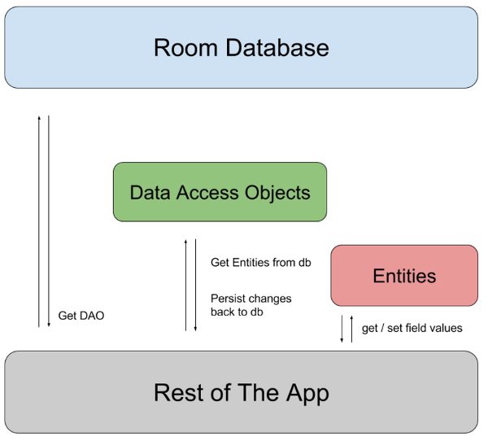

Room Persistence Library
Room 在 SQLite 之上提供了一个抽象层，以便在利用 SQLite 全部功能的同时能够流畅的访问数据库。
将数据持久化到本地对于应用程序处理大量结构化数据有非常大的好处。最常见的情况是缓存相关数据。这样，当设备无法访问网络时，用户仍然可以在离线状态下浏览内容。然后，在设备重新上线后，任何用户发起的内容变更都会同步到服务器。
核心框架提供了内置支持来处理原始的 SQL 内容。虽然这些 API 是强大的，但是它们非常低级并且使用起来需要话费巨大的时间和精力：
- 原始的 SQL 查询没有编译时验证。随着数据图的更改，需要手动更新收影响的 SQL 查询。这个过程是耗时的并且容易出错。
- 需要使用大量的样板代码用于在 SQL 查询和 Java 数据对象之间转换。
Room 在 SQLite 之上提供的抽象层帮助处理这些问题。
Room 有 3 个重大的组件：
- Database：可以使用此组件创建数据库的持有者。通过注解定义实体列表，通过类的内容定义数据库中数据访问对象（DAO）列表。它是底层连接的主要接入点。
注解的类应该是一个继承了 RoomDatabase 的抽象类。在运行时，可以通过调用 Room.databaseBuilder() 或 Room.inMemoryDatabaseBuilder() 获取一个实例。
- Entity：该组件表示一个保存有数据库行的类。对于每个 Entity，创建一个数据库表来保存项目。必须通过 Database 中的 entities 字段引用 Entity 类。Entity 中的每个字段都会持久化到数据库中，除非使用 @Ignore 注解。
注：Entity 可以拥有一个空的构造函数（如果 DAO 可以访问每个持久化的字段）或一个参数的类型和名字和 Entity 中的字段都匹配的构造函数。Room 还可以使用全部或部分的构造函数，如只接受部分字段的构造函数。
- DAO：该组件表示一个数据访问对象（DAO）的类或接口。DAO 是 Room 的主要组件，其职责是定义方法来访问数据库。被 @Database 注解的类必须包含一个没有参数的抽象方法，该方法的返回值是被 @Dao 注解的类。在编译时生成代码时，Room 创建该类的实现。
> 注：通过使用 DAO 访问数据库，而不是使用查询建造者或直接查询，可以分离数据库结构的不同组件。另外，DAO 可以在测试应用时很容易的模拟数据库。
这些组件及其与应用程序其它部分的关系，如图 1 所示：

以下代码片段包含了一个具有一个 Entity 和一个 DAO 的数据库配置：
User.java
@Entity
public class User {
@PrimaryKey
private int uid;
@ColumnInfo(name = "first_name")
private String firstName;
@ColumnInfo(name = "last_name")
private String lastName;
// 简单起见忽略了 Getters 和 setters，
// 但是 Room 需要它们。
}
UserDao.java
@Dao
public interface UserDao {
@Query("SELECT * FROM user")
List<User> getAll();
@Query("SELECT * FROM user WHERE uid IN (:userIds)")
List<User> loadAllByIds(int[] userIds);
@Query("SELECT * FROM user WHERE first_name LIKE :first AND "
+ "last_name LIKE :last LIMIT 1")
User findByName(String first, String last);
@Insert
void insertAll(User... users);
@Delete
void delete(User user);
}
AppDatabase.java
@Database(entities = {User.class}, version = 1)
public abstract class AppDatabase extends RoomDatabase {
public abstract UserDao userDao();
}
创建上述文件之后，使用如下代码获取创建的数据库实例：
AppDatabase db = Room.databaseBuilder(getApplicationContext(),
AppDatabase.class, "database-name").build();
注：在实例化 AppDatabase 对象时应该遵循单例设计模式，因为每个 RoomDatabase 实例都非常昂贵，并且很少需要访问多个实例。
Entity
当一个类被 @Entity 注解并且被 @Database 注解的 entities 参数引用，Room 会在数据库中为该 Entity 创建一个数据库表。
默认情况下，Room 为每个定义在 Entity 中的字段创建列。如果不希望 Entity 中某些字段被持久化，可以使用 @Ignore 注解这些字段。如下面的代码片段所示：
@Entity
class User {
@PrimaryKey
public int id;
public String firstName;
public String lastName;
@Ignore
Bitmap picture;
}
要持久化一个字段，Room 必须有权限访问它。可以将字段设置为 public，或为该字段提供 setter 和 getter 方法。如果使用 setter 和 getter 方法，请记住，它们基于 Room 中的 Java Beans 约定。
主键
每个 Entity 必须定义至少一个字段作为主键。即使只有一个字段，仍然需要使用 @PrimaryKey 注解该字段。如果希望 Room 为 Entity 分配自动 ID，可以设置 @PrimaryKey 的 autoGenerate) 属性。如果 Entity 有复合主键，可以使用 @Entity 注解的 primaryKeys) 属性，如下面的代码片段所示：
@Entity(primaryKeys = {"firstName", "lastName"})
class User {
public String firstName;
public String lastName;
@Ignore
Bitmap picture;
}
默认情况下，Room 使用类名作为数据库表的名字。如果希望数据库表有不同的名字，可以设置 @Entity 的 tableName) 属性，如下面的代码片段所示：
@Entity(tableName = "users")
class User {
...
}
SQLite 中的表名不区分大小写。
类似于 tableName) 属性，Room 使用字段名字作为数据库中列的名字。如果想要不同的列名，给字段添加一个 @ColumnInfo 注解，如下面的代码片段所示：
@Entity(tableName = "users")
class User {
@PrimaryKey
public int id;
@ColumnInfo(name = "first_name")
public String firstName;
@ColumnInfo(name = "last_name")
public String lastName;
@Ignore
Bitmap picture;
}
索引和唯一性
根据访问数据的方式，可能需要在数据库中索引某些字段来加速查询。要给 Entity 添加索引，需要在 @Entity 注解中添加 indices) 属性，列出想要包含在索引或复合索引中的列的名字。以下代码片段演示了该注解过程：
@Entity(indices = {@Index("name"), @Index("last_name", "address")})
class User {
@PrimaryKey
public int id;
public String firstName;
public String address;
@ColumnInfo(name = "last_name")
public String lastName;
@Ignore
Bitmap picture;
}
有时，有些字段或字段组必须是唯一的。可以通过设置 @Index 注解的 unique) 属性为 true 来实施唯一性。以下示例代码可以防止表中的两行数据具有一组相同的 firstNmae 列和 lastName 列：
@Entity(indices = {@Index(value = {"first_name", "last_name"},
unique = true)})
class User {
@PrimaryKey
public int id;
@ColumnInfo(name = "first_name")
public String firstName;
@ColumnInfo(name = "last_name")
public String lastName;
@Ignore
Bitmap picture;
}
关系
因为 SQLite 是一个关系型数据库，可以指定两个对象间的关系。即使大多数 ORM 库允许 Entity 对象之间互相引用，但是 Room 明确禁止这样做。详细信息，请参阅附录：Entity 之间无对象引用。
虽然不能使用直接关系，但是 Room 允许在 Entity 之间定义外键约束。
例如，有一个名为 Book 的 Entity，可以使用 @ForeignKey 注解定义其和 User 的关系，如下面的代码片段所示：
@Entity(foreignKeys = @ForeignKey(entity = User.class,
parentColumns = "id",
childColumns = "user_id"))
class Book {
@PrimaryKey
public int bookId;
public String title;
@ColumnInfo(name = "user_id")
public int userId;
}
外键是非常有用的，外键可以让你指定当应用的 Entity 更新时做什么。例如，通过在 @ForeignKey 注解中包含 onDelete=CASCADE) 可以告诉 SQLite 如果相应的 User 实例被删除，则删除该用户的所有图书。
注：SQLite 将 @Insert(OnConflict=REPLACE) 当作一组 REMOVE 和 REPLACE 操作来处理，而不是当作单独的 UPDATE 操作处理。这种替换冲突值的方法可能会影响外键约束。更多详细信息，请参阅 SQLite 文档的 ON_CONFLICT 子句。
嵌套对象
有时，可能会需要将一个 Entity 或普通 Java 对象（POJO）作为数据库逻辑中的一个连贯的整体，即使对象包含多个字段。对于这些情况，可以使用 @Embedded 注解来表示要在表中分解为其子字段的对象。可以像查询其它独立字段一样查询嵌套的字段。
例如：User 类可能包含一个类型为 Address 的字段，表示一个名为 street，city，state 和 postCode 的字段组合。要在表中单独存储组合列，请在 User 类中包含一个用 @Embedded 注解的 Address 字段，如下面的代码片段所示：
class Address {
public String street;
public String state;
public String city;
@ColumnInfo(name = "post_code")
public int postCode;
}
@Entity
class User {
@PrimaryKey
public int id;
public String firstName;
@Embedded
public Address address;
}
表示 User 对象的表包含以下名称的列：id，firstName，street，state，city 和 post_code。
如果 Entity 有多个相同类型的嵌套字段，可以通过设置 prefix) 属性保持列唯一。Room 会将提供的值添加到嵌套对象每个列名的开头。
数据访问对象（DAO）
Room 的主要组件是 Dao 类。DAP 以干净的方式抽象访问数据库。
注：除非在建造者上调用了 allowMainThreadQueries())，否则 Room 不允许在主线程上访问数据库，因为这样可能会长时间锁定 UI。异步查询（返回 LiveData 或 RxJava Flowable 的查询）会规避该规则，因为当需要时他们在后台线程上异步运行。
简便的方法
使用 DAO 类有多个可代表的简便方法。本文档包含了几个常见的例子。
Insert
当创建一个 DAO 方法并用 @Insert 注解时，Room 会在单独的事务中生成一个将所有参数插入到数据库的实现。
以下代码片段显示了几个示例查询：
@Dao
public interface MyDao {
@Insert(onConflict = OnConflictStrategy.REPLACE)
public void insertUsers(User... users);
@Insert
public void insertBothUsers(User user1, User user2);
@Insert
public void insertUsersAndFriends(User user, List<User> friends);
}
如果 @Insert 方法只接受到一个参数，它能返回一个 long，表示被插入项的新 rowId。如果参数是一个数组或集合，它应该返回 long[] 或 List。
更多详细信息，请参阅 @Insert 注解的参考文档或 SQLite 文档的 Rowid Tables。
Update
Update 是一个用于在数据库中更新以参数形式给到的一组 Entity 的简便方法。它使用一个查询以与每个 Entity 的主键匹配。以下代码片段演示了如何定义该方法：
@Dao
public interface MyDao {
@Update
public void updateUsers(User... users);
}
虽然通常不是必须的，可以让该方法返回一个 int 值，表示数据库中更新的行数。
Delete
Delete 是一个用于从数据库中删除以参数形式给到的一组 Entity 的简便方法。它使用主键来查找要删除的 Entity。以下代码片段演示了如何定义该方法：
@Dao
public interface MyDao {
@Delete
public void deleteUsers(User... users);
}
虽然通常不是必须的，可以让该方法返回一个 int 值，表示从数据库中删除的行数。
使用 @Query 方法
@Query 是使用 DAO 类的主要注解。它允许在数据库上执行读/写操作。每个 @Query 方法在编译时验证，所以，如果查询有问题，则会发生编译时错误而不是运行时崩溃。
Room 还会验证查询的返回值，如果返回对象的字段名字和查询响应中的相应列名不匹配，则 Room 会用以下两种方式之一提醒你：
- 如果只有部分字段名匹配会发错警告。
- 如果没有字段名匹配会给出错误。
简单查询
@Dao
public interface MyDao {
@Query("SELECT * FROM user")
public User[] loadAllUsers();
}
这是一个非常简单的查询会载入所有用户。在编译时，Room 知道它正在查询用户表中的所有列。如果查询包含语法错误或数据库中不存在用户表，Room将会在应用程序编译时显示相应的错误信息。
传递参数给查询
大多数情况下，需要传递参数给查询来执行过滤操作。例如，只显示大于某个年龄的用户。要完成此任务，需要在 Room 注解中使用方法参数，如以下代码片段所示：
@Dao
public interface MyDao {
@Query("SELECT * FROM user WHERE age > :minAge")
public User[] loadAllUsersOlderThan(int minAge);
}
当在编译时处理该查询时，Room 会匹配绑定参数 :minAge 和方法参数 minAge。Room 使用参数名字执进行匹配。如果没有匹配，在应用程序编译时会发生错误。
可以在查询中传递多个参数或多次引用它们，如以下代码片段所示：
@Dao
public interface MyDao {
@Query("SELECT * FROM user WHERE age BETWEEN :minAge AND :maxAge")
public User[] loadAllUsersBetweenAges(int minAge, int maxAge);
@Query("SELECT * FROM user WHERE first_name LIKE :search "
+ "OR last_name LIKE :search")
public List<User> findUserWithName(String search);
}
返回列的子集
大多数情况下，只需要获取到一个 Entity 的几个字段。例如，UI 可能只显示用户的名字和姓氏，而不是用户的每个详细信息。通过只获取应用程序 UI 中显示的列，可以节省宝贵的资源，并且查询完成更快。
Room 可以返回任何 Java 对象，只要可以将返回列的集合映射到返回的对象中。例如，可以创建如下的 POJO 来获取用户的名字和姓氏：
public class NameTuple {
@ColumnInfo(name="first_name")
public String firstName;
@ColumnInfo(name="last_name")
public String lastName;
}
现在，可以在查询方法中使用该 POJO。
@Dao
public interface MyDao {
@Query("SELECT first_name, last_name FROM user")
public List<NameTuple> loadFullName();
}
Room 知道查询 first_name 列和 last_name 列的返回值，并将这些值映射到 NameTuple 类的字段中。因此，Room 可以生成正确的代码。如果查询返回多余的列，或 NameTuple 类中不存在的列，Room 会显示警告。
注：这些 POJO 也可以使用 @Embedded 注解。
传递一组参数
一些查询可能需要传递可变数量的参数，直到运行时才知道参数的具体数量。例如，你可能想获取某些区域下所有用户的相关信息。当参数为一个集合时 Room 就会明白，并且会在运行时基于所提供参数的数量展开该集合。
@Dao
public interface MyDao {
@Query("SELECT first_name, last_name FROM user WHERE region IN (:regions)")
public List<NameTuple> loadUsersFromRegions(List<String> regions);
}
可观察的查询
在执行查询时，总会希望应用程序 UI 在数据更改时自动更新。要实现这个，需要在查询方法的描述中使用类型为 LiveData 的返回值。在数据库更新后，Room 会生成所有必须的代码来更新 LiveData。
@Dao
public interface MyDao {
@Query("SELECT first_name, last_name FROM user WHERE region IN (:regions)")
public LiveData<List<User>> loadUsersFromRegionsSync(List<String> regions);
}
RxJava
Room 还可以从定义的查询返回 RxJava2 的 Publisher 和 Flowable 对象。要使用该功能，需要将 Room 组中的 android.arch.persistence.room:rxjava2 组件添加到构建 Gradle 依赖中。然后，可以返回 RxJava2 中定义的类型对象，如以下代码片段所示：
@Dao
public interface MyDao {
@Query("SELECT * from user where id = :id LIMIT 1")
public Flowable<User> loadUserById(int id);
}
直接访问 Cursor
如果应用程序的逻辑需要直接访问返回行，可以从查询返回一个 Cursor 对象。如以下代码片段所示：
@Dao
public interface MyDao {
@Query("SELECT * FROM user WHERE age > :minAge LIMIT 5")
public Cursor loadRawUsersOlderThan(int minAge);
}
警告：不鼓励使用 Cursor API，因为它不能保证行是否存在或行包含什么值。仅当你已经有存在 Cursor 的代码并且不好重构时才使用此功能。
多表查询
某些查询可能需要访问多个表来计算结果。Room 允许编写任何查询，所以也可以连接表。另外，如果响应是一个可观察类型，如：Flowable 或 LiveData，Room 观察查询中引用的所有表。
以下代码片段显示了如何执行表连接以整合借阅书的用户表和当前借出的图书表之间的信息：
@Dao
public interface MyDao {
@Query("SELECT * FROM book "
+ "INNER JOIN loan ON loan.book_id = book.id "
+ "INNER JOIN user ON user.id = loan.user_id "
+ "WHERE user.name LIKE :userName")
public List<Book> findBooksBorrowedByNameSync(String userName);
}
这些查询也可以返回 POJO，例如，可以编写一个加载用户及其宠物名称的查询，如下所示：
@Dao
public interface MyDao {
@Query("SELECT user.name AS userName, pet.name AS petName "
+ "FROM user, pet "
+ "WHERE user.id = pet.user_id")
public LiveData<List<UserPet>> loadUserAndPetNames();
// You can also define this class in a separate file, as long as you add the
// "public" access modifier.
static class UserPet {
public String userName;
public String petName;
}
}
使用类型转换器
Room 提供内置支持基本数据类型及其封装类型。然而，有时候需要使用自定义类型，并将其值存储在数据库中单独的列里。要添加自定义类型的支持，需要提供一个 TypeConverter 将自定义类转换为 Room 可以持久化的已知类型。
例如：如果想要持久化 Date 实例，你可以编写如下的 TypeConverter 在数据库中存储等效的 Unix 时间戳。
public class Converters {
@TypeConverter
public static Date fromTimestamp(Long value) {
return value == null ? null : new Date(value);
}
@TypeConverter
public static Long dateToTimestamp(Date date) {
return date == null ? null : date.getTime();
}
}
上面的例子定义了两个方法，一个将 Date 对象转换为 [Long] 对象，另一个执行逆向转换，将 [Long] 转换为 Date。因为 Room 已经知道如何持久化 [Long] 对象，所以它可以使用该转换器来持久化 Date 类型的值。
下面，给 AppDatabase 添加 [@TypeConverter] 注解，以便 Room 可以在 AppDatabase 对每个 Entity 和 DAO 使用定义的转换器。
AppDatabase.java
@Database(entities = {User.java}, version = 1)
@TypeConverters({Converter.class})
public abstract class AppDatabase extends RoomDatabase {
public abstract UserDao userDao();
}
使用这些转换器，可以在其它查询中像使用基本数据类型一样使用自定义类型。
User.java
@Entity
public class User {
...
private Date birthday;
}
UserDao.java
@Dao
public interface UserDao {
...
@Query("SELECT * FROM user WHERE birthday BETWEEN :from AND :to")
List<User> findUsersBornBetweenDates(Date from, Date to);
}
还可以给 @Typeconverters 限制不同的作用域，包括单个 Entity，DAO 和 DAO 方法，更多详细信息，请参阅 @TypeConverters 注解的参考文档。
数据库迁移
当给应用程序添加或修改功能时，需要修改 Entity 类来反映这些修改。当用户更新到应用程序的最新版本时，你不希望他们丢失现有数据，特别是如果无法从远程服务端恢复数据时。
Room 允许以编写 Migration 类的方式保留用户数据。每个 Migration 类都指定一个 startVersion 和 endVersion。在运行时，Room 允许每个 Migration 的 migrate()) 方法，使用正确的顺序将数据库迁移到最新版本。
警告：如果没有提供必要的迁移，则会重建数据库，这意味着将会失去数据库中所有的数据。
Room.databaseBuilder(getApplicationContext(), MyDb.class, "database-name")
.addMigrations(MIGRATION_1_2, MIGRATION_2_3).build();
static final Migration MIGRATION_1_2 = new Migration(1, 2) {
@Override
public void migrate(SupportSQLiteDatabase database) {
database.execSQL("CREATE TABLE `Fruit` (`id` INTEGER, "
+ "`name` TEXT, PRIMARY KEY(`id`))");
}
};
static final Migration MIGRATION_2_3 = new Migration(2, 3) {
@Override
public void migrate(SupportSQLiteDatabase database) {
database.execSQL("ALTER TABLE Book "
+ " ADD COLUMN pub_year INTEGER");
}
};
迁移过程结束后，Room验证数据库架构以确保迁移执行正确。如果 Room 发现问题，将会抛出含有不匹配信息的异常。
测试迁移
迁移不是简单的写入，并且无法正确写入它们可能会导致应用程序崩溃。为了保持应用的稳定性，应该实现测试迁移。Room 提供了一个测试 Maven 组件来帮助进行该测试过程。然而，为了使该组件正常工作，需要导出数据库的结构
导出架构
汇编后，Room 将数据库的架构信息导出为 JSON 文件。要导出架构，需要在 build.gradle 文件中设置 room.schemaLocation 注解数据处理属性，如以下代码片段所示：
build.gradle
android {
...
defaultConfig {
...
javaCompileOptions {
annotationProcessorOptions {
arguments = ["room.schemaLocation":
"$projectDir/schemas".toString()]
}
}
}
}
应该将导出的 JSON 文件（其表示数据库架构的历史记录）存储在版本控制系统中，因为它允许 Room 创建旧版本的数据库以进行测试。
要测试这些迁移，请将来自 Room 的 android.arch.persistence.room:testing Maven 组件添加到测试依赖中，并将架构文件的位置添加为资产文件，如以下代码片段所示：
build.gradle
android {
...
sourceSets {
androidTest.assets.srcDirs += files("$projectDir/schemas".toString())
}
}
测试包提供了一个 MigrationTestHelper 类，可以读取这些架构文件。它也是一个 Junit4 的 TestRule 类，所以它可以管理创建的数据库。
以下代码片段显示了迁移测试的例子：
@RunWith(AndroidJUnit4.class)
public class MigrationTest {
private static final String TEST_DB = "migration-test";
@Rule
public MigrationTestHelper helper;
public MigrationTest() {
helper = new MigrationTestHelper(InstrumentationRegistry.getContext(),
MigrationDb.class.getCanonicalName(),
new FrameworkSQLiteOpenHelperFactory());
}
@Test
public void migrate1To2() throws IOException {
SupportSQLiteDatabase db = helper.createDatabase(TEST_DB, 1);
// db 的架构版本是 1. 使用 SQL 查询插入一些数据。
// You cannot use DAO classes because they expect the latest schema.
db.execSQL(...);
// 准备下一个版本。
db.close();
// 使用 version2 重新打开数据库
// 并且提供 MIGRATION_1_2 作为迁移过程。
db = helper.runMigrationsAndValidate(TEST_DB, 2, true, MIGRATION_1_2);
// MigrationTestHelper 自动验证架构的更改，
// 但是需要验证数据是否迁移正确。
}
}
测试数据库
当应用程序运行测试时，如果不测试数据库本身则没有必要创建完整的数据库。Room 允许在测试中轻松的模拟数据访问层。这个过程是可能的，因为 DAO 不会泄漏数据库的任何细节。当测试应用程序的其余部分时，应该创建 DAO 类的模拟或假的实例。
有两种方式可以测试数据库：
- 在开发主机上。
- 在 Android 设备上。
在主机上测试
Room 使用 SQLite 支持库，它提供与 Android Framework 类中一致的接口。该支持库允许传递支持库的自定义实现来测试数据库查询。
即使此设置可以让测试快速运行，但是不推荐使用，因为你的设备上（和用户设备上）运行的 SQLite 版本和你主机上运行的版本不一致。
在 Android 设备上测试
用于测试数据库实现的推荐方式是编写在 Android 设备上运行的 Junit 测试。因为这些测试不需要创建 activity，所以它们应该比 UI 测试执行的更快。
设置测试时，应该创建数据库的内存版本，使测试更加封闭，如以下示例所示：
@RunWith(AndroidJUnit4.class)
public class SimpleEntityReadWriteTest {
private UserDao mUserDao;
private TestDatabase mDb;
@Before
public void createDb() {
Context context = InstrumentationRegistry.getTargetContext();
mDb = Room.inMemoryDatabaseBuilder(context, TestDatabase.class).build();
mUserDao = mDb.getUserDao();
}
@After
public void closeDb() throws IOException {
mDb.close();
}
@Test
public void writeUserAndReadInList() throws Exception {
User user = TestUtil.createUser(3);
user.setName("george");
mUserDao.insert(user);
List<User> byName = mUserDao.findUsersByName("george");
assertThat(byName.get(0), equalTo(user));
}
}
附录：Entity 之间无对象引用
将数据库中的关系映射到相应的对象模型是一种常见的做法，并且在服务端可以很好的运行，因为在访问时惰性加载文件是高效的。
然而，在客户端，惰性加载是不可能的，因为有可能发生在 UI 线程上，并且在 UI 线程中查询磁盘上的信息会产生显著的性能问题。 UI 线程大约有 16ms 来计算和绘制 activity 的布局更新，所以，即使一个查询任务只需要 5ms，应用程序仍然可能没有时间绘制帧，造成显著的破坏。更糟糕的时，如果并行运行单独的事务或设备忙于其它磁盘繁重的任务，则查询可能需要更多的时间完成。但是，如果不使用惰性加载，应用程序将会获取比所需更多的数据，造成内存消耗问题。
ORM 通常将此决定留给开发者，以便他们可以根据应用程序的情况做最好的处理。不幸的是，开发者通常的处理结果是在应用程序和 UI 之间共享模型。如果 UI 更新超时，会产生难以预料和调试的问题。
例如：让 UI Book 对象的列表，并且没本书都有一个 Author 对象。最初可能设计使用惰性加载查询，如 Book 实例使用 getAuthor() 方法返回作者。getAuthor() 的第一次调用会调用查询数据库。一段时间后，还需要在应用程序的 UI 显示作者名字。可以轻松的添加方法调用，如以下代码片段所示：
authorNameTextView.setText(user.getAuthor().getName());
然而，这个看似无辜的变化造成在主线程上查询 Author 表。
如果急需查询作者信息，当不在需要数据时，很难改变数据的加载方式，例如，应用程序的 UI 不再需要显示有关特定作者的信息。因此，当数据不在显示时应用程序必须继续加载数据。如果 Author 类引用其它的表（如，有 getBooks() 方法）情况会更糟。
基于这些原因，Room 禁止 Entity 之间的对象引用。相反，必须明确的请求应用程序需要的数据。